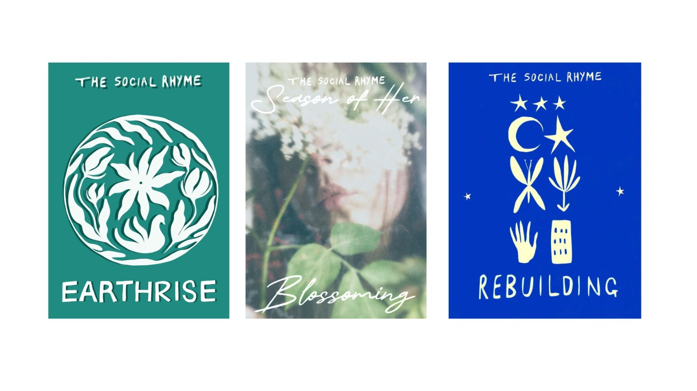

Hola, soy Karime Barron

Egresada con Mención Honorífica de la UNAM después de haber investigado en Polonia la migración laboral de ucranianos en Europa del Este a inicios del siglo XXI. Participó como investigadora en la Universidad de Tokyo en Japón (2017 al 2019) con el Dr. Wada (Columbia University) en análisis cuantitativo de protestas sociales en América Latina, para que a través del Machine Learning precedir problemáticas sociales. Colaboró en Gobierno Federal mexicano promoviendo inversiones en el exterior y MiPYMES mexicanas. Representó México en paneles internacionales para la promoción de normas y estándares internacionales para el cambio climático, ciberseguridad y desperdicios electrónicos. Coordinadora general de G4G LATAM, iniciativa global que nace en la Harvard Kennedy School. Actualmente vive en Estados Unidos y promueve entre MX-USA la innovación, ciencia y tecnología.
The Social Rhyme somos una organización sin fines de lucros que conformamos poetas de todo el mundo y que a través de nuestra pluma y poemarios (briefs) donamos a organizaciones con fines sociales. Si quieres publicar un poema, escribe a: thesocialrhyme@gmail.com
Las mujeres ucranianas han atravesado una serie de cambios y desafíos con el nuevo modelo económico de Europa del Este. Ve mi ponencia en el Instituto de Investigaciones Económicas de la UNAM. "Migración laboral de mujeres ucranianas ¿libertad de oportunidades?"
Proyecto literario virtual que busca llegar a través de pequeños fragmentos sobre literatura,recomendaciones literarias, poemas y fragmentos de la cotidianidad que nos ayudan a reflexionar y pensar que uno de los desafíos de esta sociedad es pensar A VOZ ALTA.